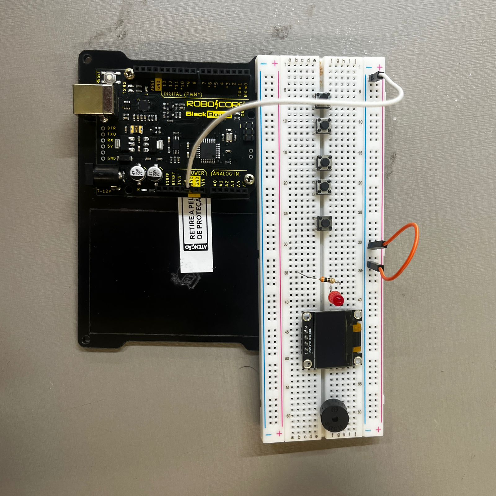
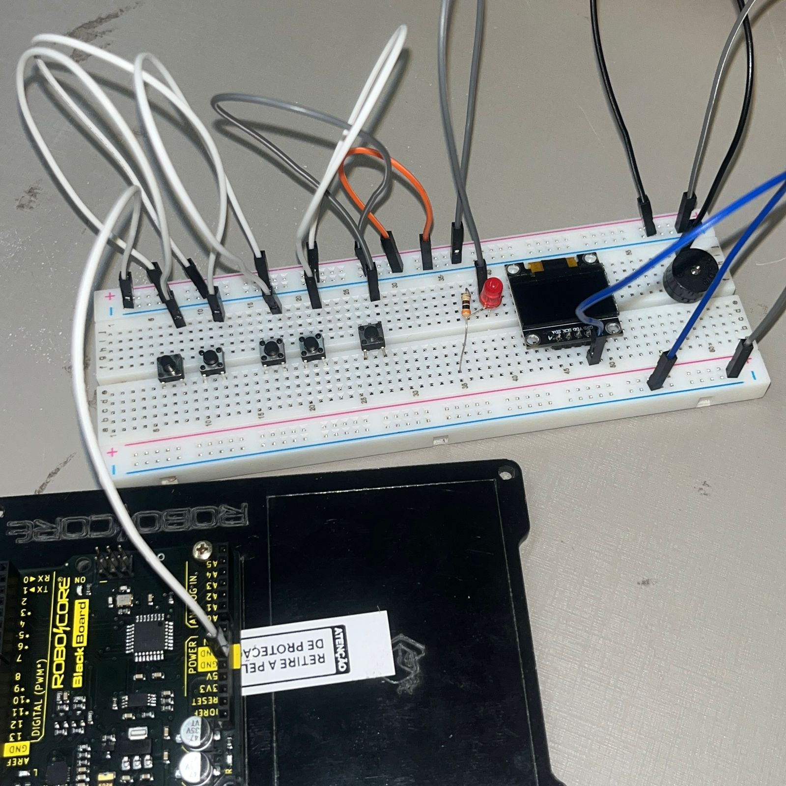
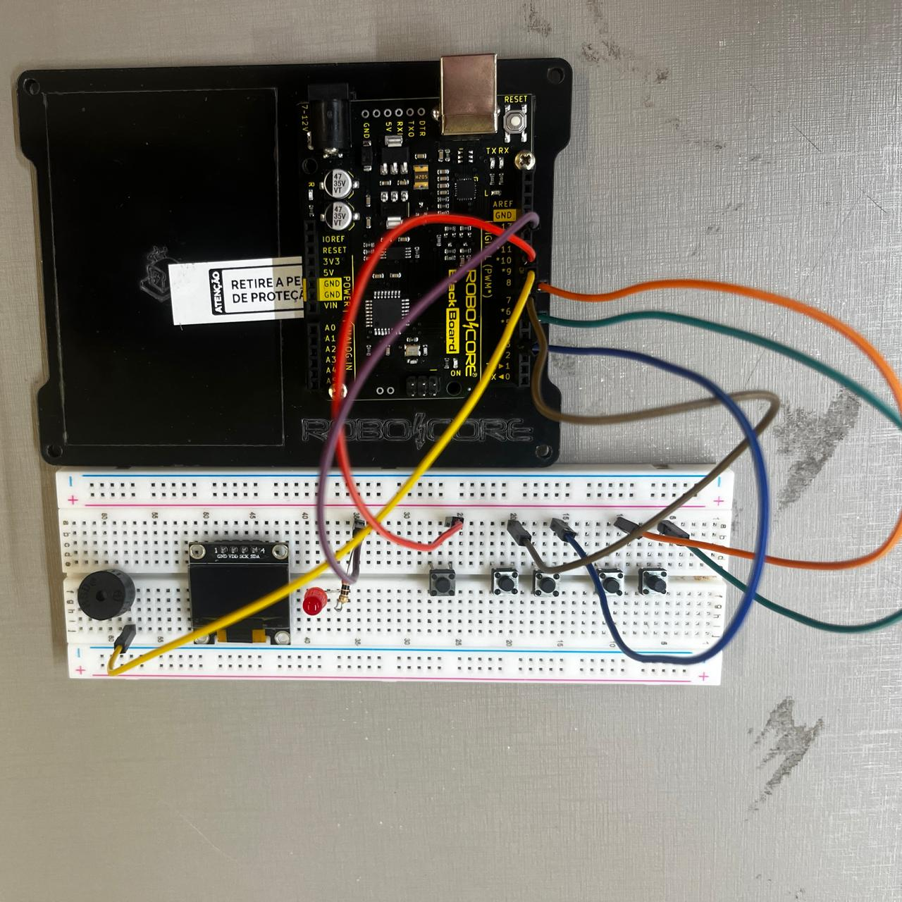
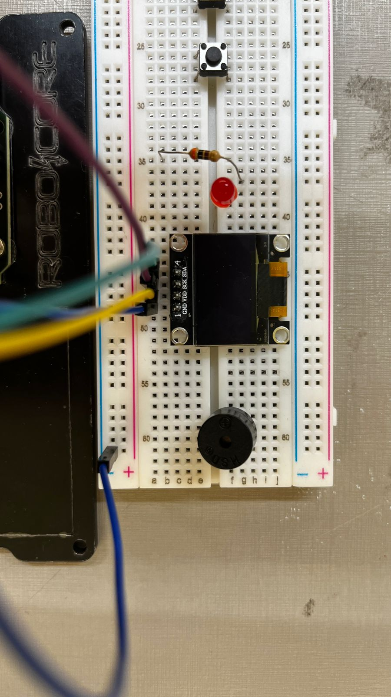

o primeiro passo é baixar a IDE do ardunio. Para isso acesse o site oficial do Arduino, baixe a versão compatível com o seu sistema operacional (Windows, macOS ou Linux). E siga as instruções de instalação
separe os seguintes materiais: 1x Arduino Uno, 1x Protoboard, 5x Botões, 1x Tela OLED, 1x Resistor de 220 ohms, 1x Buzzer, 21x Jumpers e 1x LED Vermelho. Certifique-se de ter todos os itens listados, organizados e à mão para facilitar a montagem
Conecte os componentes na protoboard conforme mostrado na imagem a seguir. O buzzer, a tela OLED, o LED, o resistor e os botões(estes terão as funções de atirar, esquerda, frente, tras, direita na ordem apresetada na imagem) devem ser conectados de acordo com a disposição indicada na imagem
Conecte o pino GND (terra) da sua placa Arduino ao trilho de linha negativa (geralmente marcado com um sinal de menos "-") da sua protoboard. Em seguida, faça a conexão entre os quatro trilhos negativos da protoboard, garantindo que todos compartilhem uma referência comum de terra. Isso é essencial para o funcionamento correto do circuito e para que todos os componentes na protoboard funcionem adequadamente

Conecte o terminal negativo de todos os componentes à parte negativa da protoboard, que já está conectada ao pino GND do Arduino. Isso garantirá que todos os componentes compartilhem uma referência comum de terra, permitindo o funcionamento adequado do circuito

Agora, conecte os componentes à placa Arduino da seguinte forma: o terminal positivo do LED, que estará conectado a um resistor, deve ser ligado ao pino 13; o terminal positivo do buzzer deve ser conectado ao pino 9; o terminal positivo do botão de atirar deve ser conectado ao pino 10; o terminal positivo do botão de ir para a esquerda deve ser conectado ao pino 6; o terminal positivo do botão de ir para frente deve ser conectado ao pino 8; o terminal positivo do botão de ir para trás deve ser conectado ao pino 3; e o terminal positivo do botão de ir para a direita deve ser conectado ao pino 7

Para conectar a tela OLED ao Arduino, faça as seguintes conexões: o pino VDD da tela deve ser conectado ao pino 3,3V do Arduino, o pino SCK deve ser conectado ao pino A5 e o pino SDA deve ser conectado ao pino A4. Essas conexões permitirão que a tela OLED se comunique corretamente com o Arduino e seja alimentada adequadamente.

Antes de carregar o código no Arduino, abra a IDE do Arduino e selecione a placa correta. Para isso, vá até o menu Ferramentas > Placa e escolha "Arduino Uno" (ou o modelo correspondente ao seu Arduino). Em seguida, baixe o código do projeto pelo GitHub ou pelo botão de download disponível. Após o download, conecte o Arduino ao seu computador usando o cabo USB. Carregue o código baixado na IDE do Arduino, clicando no botão de upload. Assim que o código for carregado, ao pressionar o botão de atirar, o jogo começará